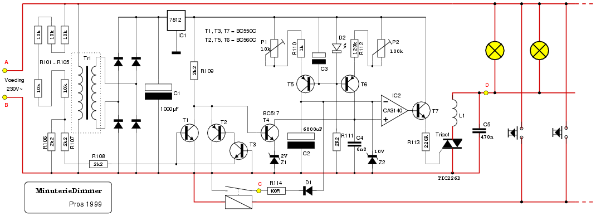
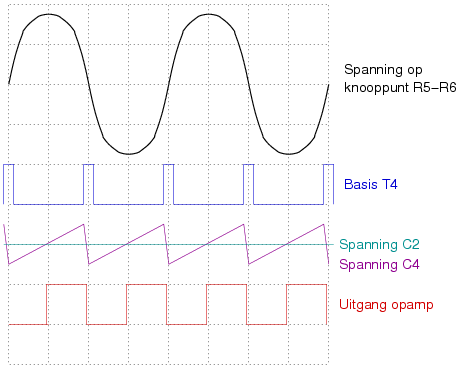
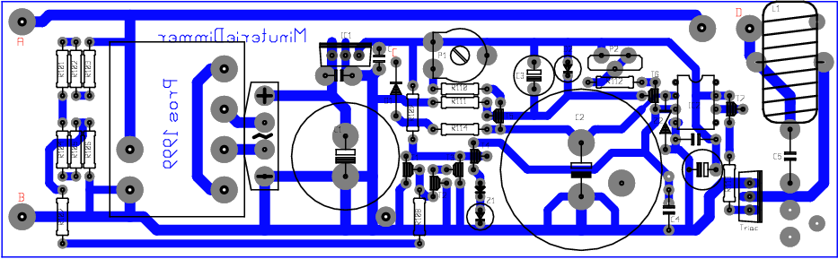

Een waarschuwing vooraf is hier wel op zijn plaats: de ganse schakeling is verbonden met het lichtnet! Hou daar rekening mee bij het testen of meten. Om dit duidelijk te maken, zijn de 230V-lijnen donkerrood afgebeeld.

| In het schema hierboven zien we uiterst links een aantal weerstanden1 (R101 ... R105) die in serie geschakeld zijn. Ze vormen met R106 een spanningsdeler. Op het knooppunt hiervan staat een wisselspanning van 9Volt, die via R107 en R108 naar de basissen van T1 en T3 gevoerd wordt. Is de spanning positief t.o.v. GND, dan gaat T1 geleiden. Is ze negatief, dan gaat T3 ―en bijgevolg ook T2― in geleiding. In beide gevallen wordt de basis van T4 ―die voorspanning krijgt via R109― naar GND getrokken, waardoor T4 gaat sperren. | Het gevolg hiervan is, dat T4 100 x per seconde ―tijdens de nuldoorgang van de netspanning, als zowel T1 als T3/T2 sperren― kortstondig in geleiding gaat. In die periode zal hij C4 bijna geheel2 ontladen. Tussendoor wordt C4 terug opgeladen door de stroombron die gevormd wordt door R111, D2, T6, R112 en P2. Het gevolg van dit alles is, dat op de niet-inverterende ingang van opamp IC2 een zaagtandspanning staat van 100Hz, die syncroon3 loopt met de netspanning. |

Op de inverterende ingang van dezelfde opamp komt de stuurspanning
te staan. Is deze hoger dan de hoogste waarde die de spanning over
C4 bereikt, dan blijft de uitgang van de opamp laag, en gebeurt er
verder niets. Dat zal het geval zijn, als de schakeling een
tijdlang in dienst is; de stroombron rond T5 zal dan C2 tot 10Volt
opgeladen hebben. 10Volt, vanwege de aanwezigheid van zenerdiode
Z2.
Stel nu, dat een gebruiker drukknop K1 indrukt. In dat geval wordt
C2 ontladen via R114 en D1. Bij een korte druk geschiedt die
ontlading slechts gedeeltelijk; drukt men langer, dan stopt de
ontlading op 0.6Volt; daar zorgt D1 voor.
In dat laatste geval zal de spanning op de inverterende ingang van de opamp
steeds lager zijn dan op de niet-inverterende ingang. C4 wordt
immers niet volledig ontladen door toedoen van Z1. De
uitgangsspanning van de opamp wordt positief, en T7 voorziet
Triac Tr1 van de benodigde stuurspanning: het licht gaat op volle
sterkte branden.
Ondertussen wordt C2 langzaam weer opgeladen; na een tijdje zal
diens spanning hoger worden dan de laagste spanning over C4. Een
en ander is op de grafiek duidelijk te volgen.
Het voorbeeld hierboven schetst de situatie die zich voordoet als
de spanning over C2 zo'n 5Volt bedraagt (halfweg tussen volle
lichtsterkte en minimum lichtsterkte). Na elke nuldoorgang van
de netspanning is de spanning over C4 lager dan over C2; de
uitgang van de opamp is bijgevolg laag, en Triac1 spert. Na
± 1/200 van een seconde is C4 zover opgeladen, dat zijn
spanning die van C2 overtreft. Gevolg: de uitgang van IC2 wordt
hoog en Triac1 gaat in geleiding. Dat alles gebeurt zo'n 100 maal per
seconde.
De aanwezigheid van instelpotmeters P1 en P2 doet vermoeden, dat
er één en ander moet ingesteld worden.
De taak van P1 is eenvoudig: hiermee wordt bepaald hoe lang het
duurt, voor het licht weer gedoofd is.
Met P2 stellen we de stroom in, waarmee C4 wordt opgeladen. Een
hoge stroom heeft als resultaat dat het licht langer voluit gaat
branden. Bij een kleinere stroom gaat de schakeling sneller over
op de dim-modus.
Maar er is meer: men kan de stroom zó hoog instellen, dat de
topspanning van C4 die van C2 altijd overschrijdt; deze laatste
is immers begrensd tot 10Volt door toedoen van Z2. In dat geval
zal het licht nooit volledig uitgaan! Het blijft altijd een
beetje zwak branden. Het is aan de gebruiker, te bepalen of hij
deze mogelijkheid als “nuttig” dan wel als
“energieverspilling” bestempelt.
Wie bovenstaande uitleg gevolgd heeft, zal
beseffen dat ―bij het in dienst stellen van de schakeling― het
licht onmiddelijk voluit gaat branden. C2 is dan immers volledig
ontladen.
Niets om van te schrikken, dus...
Verder kan de schakeling zonder probleem een bestaande
trappenhuisautomaat vervangen. Voor het relais (Rel1) is geen
plaats voorzien op de print; hierdoor is zowat elk 230Volt-relais
bruikbaar, maar men zal zelf een bevestigingsmethode moeten
verzinnen. Een relais, dat op een bevestigingsrail kan geklikt
worden, is ideaal.
Wie dimmer zegt, denkt meteen aan de storing die zulk een toestel kan veroorzaken. Bij dit project wordt zulks voorkomen door de heilzame invloed van ontstoorspoel L1 en ontstoorcondensator C5. Bedenk wel dat C5 ofwel een 630Volt(DC)-exemplaar moet zijn, ofwel een exemplaar waarop duidelijk vermeld staat dat het voor 250V wisselspanning geschikt is!
